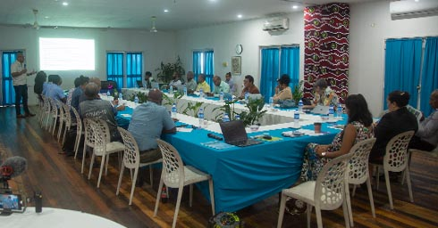

STRATEGIC PARTNERSHIP
NGOs, Churches, International Donors
GOAL:
Strengthen collaboration with development partners.
PROJECTS:
- Partnering with NGOs and churches for social welfare programs.
- Securing foreign aid for infrastructure and health projects.
- New partnership agreements signed with UNDP and EU for sustainable development.
- Increased community participation in donor-funded initiatives.